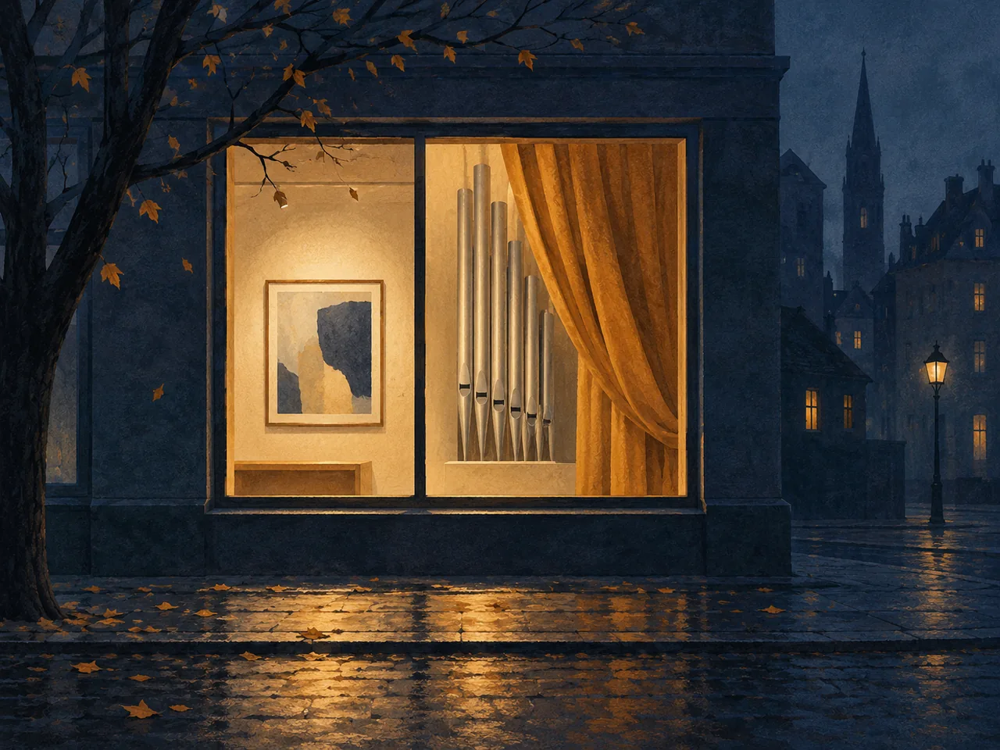

Куда сходить в Калининграде и Светлогорске 2–8 ноября
На неделе 2–8 ноября можно выбрать музейный вечер в Калининграде, спектакль в субботу, семейную сказку в воскресенье или песни Муслима Магомаева в Светлогорске. Собрали шесть вариантов с временем начала и условиями входа.

Даты и города
| Параметр | В подборке |
|---|---|
| 3 ноября, вторник | Калининград: три музейные программы с 18:00 |
| 7 ноября, суббота | Калининград: «Пролетая над гнездом кукушки», 18:00 |
| 8 ноября, воскресенье | Калининград: музыкальная сказка, 12:00 |
| 8 ноября, воскресенье | Светлогорск: песни Муслима Магомаева, 15:00 |
Что выбрать на этой неделе
3 ноября — музыка и мастерские в Третьяковке
В калининградской Третьяковской галерее по единому билету можно совместить мастерскую и концерт «Звучащие картины»: мастерские идут с 18:00 до 20:30, концерт — с 19:00 до 20:30. Вход с 17:30. Цена единого билета в тексте программы не указана; временная выставка «Точка и линия» оплачивается отдельно. На цианотипию записывают у администратора мастерских, на квиз — в книжной гостиной. В подробной программе стоит 12+, в новостном анонсе — 6+; у отдельных занятий свои отметки 0+, 6+ и 12+, поэтому с ребёнком выбирайте конкретное занятие.
3 ноября — история Биржи и бесплатные выставки
В Музее изобразительных искусств на Ленинском проспекте, 83, можно узнать историю здания: экскурсия «Тайны старой Биржи» идёт с 18:00 до 19:20, затем с 19:30 до 20:50 — мастер-класс «Архитектурный коллаж». Общая программа «Истории о нас» (6+) проходит с 18:00 до 21:00. Стандартный билет — 500 ₽, школьный, студенческий и пенсионный — 300 ₽. Если нужен бесплатный вариант, с 18:00 до 21:00 открыт свободный вход именно на две выставки: о Нюрнбергском процессе и «Романтическая перспектива». Условия записи на отдельные занятия в анонсе не описаны.
3 ноября — природа и археология в Историко-художественном музее
В Историко-художественном музее на Клинической, 21, можно выбрать встречу с исследователем: в 18:30 начинается разговор с археологом, а с 19:00 до 20:00 — «Грибные встречи» с фотографом Ольгой Демиденко. Вся программа (0+) идёт с 18:00 до 21:00, касса закрывается в 20:30. Билеты продаются на сайте музея и в кассе; стоимость и порядок записи на отдельные занятия нужно уточнить у музея. Для росписи «Узоры России — символы Балтики» указаны начала в 18:10, 19:10 и 20:10 и группа до пяти человек.
7 ноября — «Пролетая над гнездом кукушки»
Для театрального вечера — сценическая версия романа Кена Кизи в областном драмтеатре Калининграда. Спектакль «Пролетая над гнездом кукушки» (16+) начнётся 7 ноября в 18:00 на Основной сцене и продлится 2 часа 20 минут с антрактом. В афише есть переход к билетам; цена и необходимость отдельной записи не указаны. Наличие свободных мест нужно проверять при покупке.
8 ноября — «Винни-Пух находит хвост Иа»
Семейный вариант на воскресное утро — музыкальная сказка «Винни-Пух находит хвост Иа» в областной филармонии. В актуальной афише указаны 8 ноября, 12:00 и концертный зал в Калининграде. Для входа нужен билет. Актуальную цену, возрастную отметку и необходимость отдельной записи уточняйте у филармонии по ссылке на программу.
8 ноября — песни Муслима Магомаева в Светлогорске
В программе «Ты... моя мелодия» (6+) песни Муслима Магомаева исполнит Владимир Гудожников. Начало — 8 ноября в 15:00, «Янтарь-Холл», улица Ленина, 11. Дата, время и возрастная отметка подтверждены муниципальным календарём Светлогорска. Актуальная цена, наличие билетов и условия записи не подтверждены; перед поездкой проверьте их у организатора.
Контекст
Подборка подготовлена 1 ноября. Музейные программы, спектакль и семейная сказка взяты со страниц организаторов; концерт в Светлогорске — из официального муниципального календаря. Другие даты и сеансы смотрите в общей афише, полные музейные программы — в ссылках ниже.
Что это значит
Выберите один музей на вечер
Программы 3 ноября пересекаются по времени. Выберите главное занятие заранее: экскурсии, концерт и мастерские начинаются в определённые часы.
Связи с регионом
Источники
- Третьяковская галерея: подробное расписание «Ночи искусств»Опубликовано · сверено 1 ноября 2026
- Третьяковская галерея: программа «Ночи искусств»Опубликовано 22 октября 2026 · сверено 1 ноября 2026
- Музей изобразительных искусств: программа «Истории о нас»Опубликовано 26 октября 2026 · сверено 1 ноября 2026
- Историко-художественный музей: программа «Ночи искусств» 3 ноябряОпубликовано 23 октября 2026 · сверено 1 ноября 2026
- Драмтеатр: ноябрьская афиша, «Пролетая над гнездом кукушки» 7 ноябряОпубликовано · сверено 1 ноября 2026
- Филармония: афиша, «Винни-Пух находит хвост Иа» 8 ноябряОпубликовано · сверено 1 ноября 2026
- Филармония: программа «Винни-Пух находит хвост Иа»Опубликовано · сверено 28 октября 2026
- Официальный календарь Светлогорска: «Ты... моя мелодия», 8 ноябряОпубликовано · сверено 1 ноября 2026
- Янтарь-Холл: программа концерта «Ты... моя мелодия»Опубликовано · сверено 28 октября 2026